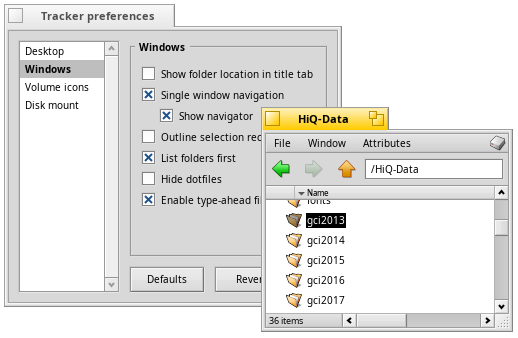

English
EnglishSingle window navigation
Double-clicking your way down folder after folder, you'll quickly end up with many open Tracker windows.
Holding the OPT key (normally the WIN key) prevents this as it automatically closes the parent folder.
Alternatively, you can activate from the Tracker preferences.
will add back/forward buttons.

Further reading:
Tracker
Tracker